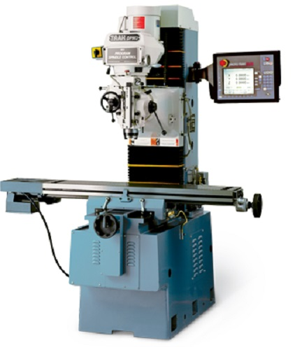
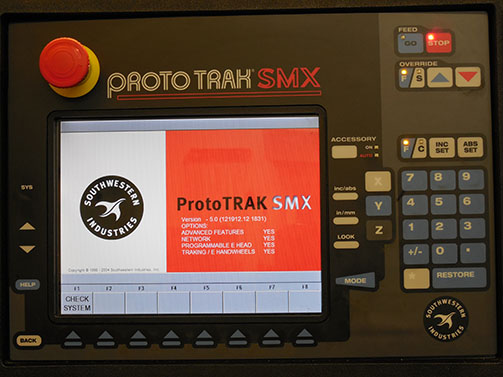
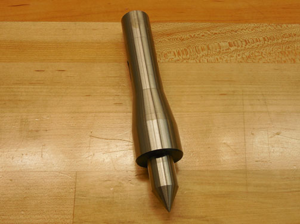
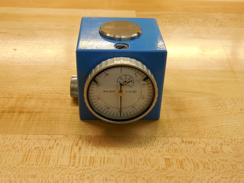
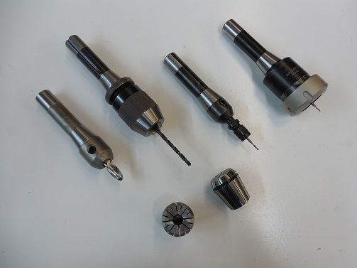
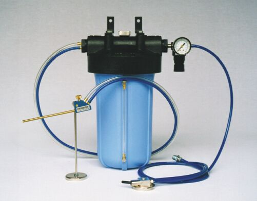

Getting Started¶
Before using the machine fully read and understand the material covered in this guide. This guide is not a replacement to the full documenation provided by Southwestern Industries, Inc. If you have any questions please ask one of the shop staff.
Overview¶
The Trak DPM SX2 is intended for medium sized work. The machine’s X, Y, Z limits are 32” x 16” x 27” (812.8mm x 406.4mm x 685.8mm) and the table size is 49” x 9” (1244.6mm x 228.6mm). The machine has a spindle speed range of 300 to 5000 RPM with a maximum feed rate of 90 IPM (2286 mm/m) in the X,Y & Z axis. If you need a machine that is capable of handling larger work consider the HAAS VM2 (capable of doing 5-axis work). If you need a machine that is capable of handling smaller work consider the Tormach PCNC 1100 (capable of doing 4-axis work).
Front Control Panel¶
The front control panel is where a number of important machine controls are located. This includes the Go/Stop buttons, emergency stop, computer on/off, 2- 3-axis selection and a number of spindle controls. You should familarize yourself with these controls and their location.
Reference Tool and Tool Setter¶
The reference tool, used with a tool setter, is used to set the tool setting reference position.
Tool Setter¶
The tool setter is used to set the reference tool and all cutting tool heights.
Tool Holders¶
The Trak DPM SX2 uses a tool holding system called R8 collets. They can be a collapsable collet, or a solid style built into the cutter.
Fogbuster¶
The Fogbuster is a mist coolant system. It can be used as an alternative to applying the oil manually. The Fogbuster is ideal for operations that don’t require full flood coolant but where cutting oil alone may be insufficient.